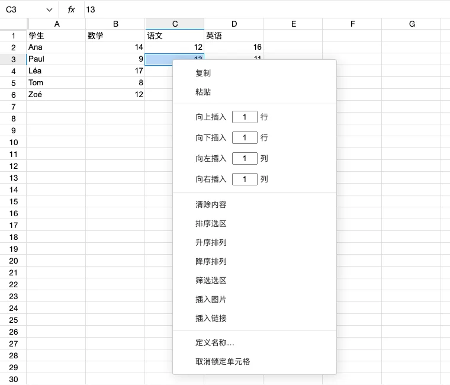

行与列
大小
| 操作 | 效果 |
|---|---|
| 拖动列标的右边框 | 改变列宽 |
| 拖动行标的下边框 | 改变行高 |
| 右键单击行标或列标 › 宽、高 | 以像素设置所有选中列或行的大小 |
插入、删除
在单元格或行列标上右键：插入 1 行 上、插入 1 行 下、插入 1 列 左、插入 1 列 右。数量在框中键入。在行列标上右键：删除选中 行、删除选中 列。

公式会自动调整：其引用随移动的单元格变化。上限为 10 000 行、1 000 列。
隐藏
在行列标上右键 › 隐藏选中 行、隐藏选中 列。隐藏的单元格仍会计算。要重新显示，请选择其两侧的行列标，然后右键 › 显示隐藏。
冻结
冻结的行和列在滚动时保持可见。选择边界单元格，然后 或 查看 › 冻结：
| 命令 | 保持可见 |
|---|---|
| 冻结至当前行 | 直到该单元格所在行（含） |
| 冻结至当前列 | 直到该单元格所在列（含） |
| 冻结至当前行列 | 两者 |
| 取消冻结 | 无 |
要保留标题行：单击第 1 行的单元格，冻结至当前行。